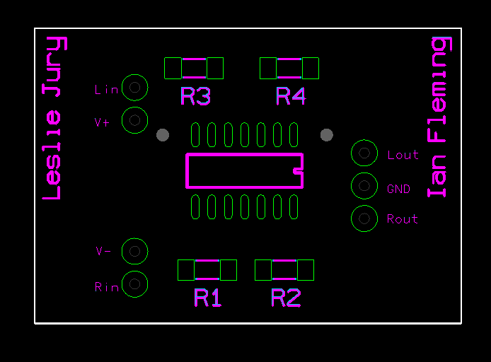

Smart Lightstick (STM32 Nucleo)
I utilized C and the STM32 Nucleo Microcontroller to make an interactive lightstick that flashes to the BPM of your favorite songs.
My favorite school and personal projects.
I utilized C and the STM32 Nucleo Microcontroller to make an interactive lightstick that flashes to the BPM of your favorite songs.

A collection of projects I've made for hackathons

I experimented with different displays for the STM32 Nucleo, PCD8544 and LCD1602, and made a few fun text and animation projects with them.

I implemented what is referred to as the sliding window algorithm in Python, which calculates the maximum sum of a subarray of a given size.

I used four 8x8 LED matrices and an Arduino to create a display that can show any text inputted

I designed and fabricated a printed circuit board (PCB) for an audio amplifier.

I created a simple security system using the STM32 Nucleo that detects door/windows opening and displays an LED, it also has an arm/disarm system that uses buttons and LEDs.

I built my Neocities website to keep as a place to work on my HTML and CSS.

I used Python and Ren'py to create an interactive story exploring concepts in discrete mathematics and computer science.